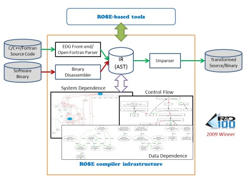

| Developed at Lawrence Livermore National Laboratory (LLNL), ROSE is an open source compiler infrastructure to build source-to-source program transformation and analysis tools for large-scale C (C89 and C98), C++ (C++98 and C++11), UPC, Fortran (77, 95, 2003), OpenMP, Java, Python, PHP, and Binary applications. ROSE users range from experienced compiler researchers to library and tool developers who may have minimal compiler experience. ROSE is particularly well suited for building custom tools for static analysis, program optimization, arbitrary program transformation, domain-specific optimizations, complex loop optimizations, performance analysis, and cyber-security. |

|
Goal
The primary goal of the ROSE project is to optimize applications within the U.S. Department of Energy (DOE).
ROSE aims to be:
- A library (and set of associated tools) to quickly and easily apply compiler techniques to one's code in order to improve application performance and developer productivity.
- A research and development compiler infrastructure for for writing custom source-to-source translators to perform source code transformations, analysis, and optimizations.
Approach
- Cutting-edge research on source- and high-level compiler analysis and optimization algorithms.
- Best-practice software development to incorporate existing compiler techniques to and develop new ones.
- Pre-built ROSE tools to perform program transformation, analysis and optimization of source code.
- An easy-to-use API to build customized, domain-specific compiler-based analysis, transformation, and optimization tools.
Resources
Current release
- The ROSE public website
- Download and installation
- Source code analysis tutorial (PDF)
- Binary analysis tutorial
- ROSE user manual (PDF)
- ROSE-Based Tools
- Publications
- Public mailing list for anyone that uses ROSE.
- Developers mailing list for anyone who contributes to the ROSE project.
- Core mailing list for anyone who has write access to our internal repositories.
- Projects using ROSE
- Highlights
- Outreach
- Library developers and collaborators
- About us
Other releases
The documentation you're currently viewing is for a specific version of ROSE. Documentation for other releases can be found here.
Contributors to this release
Next steps
ROSE is an open source project that can be installed from source code. See Download and installation